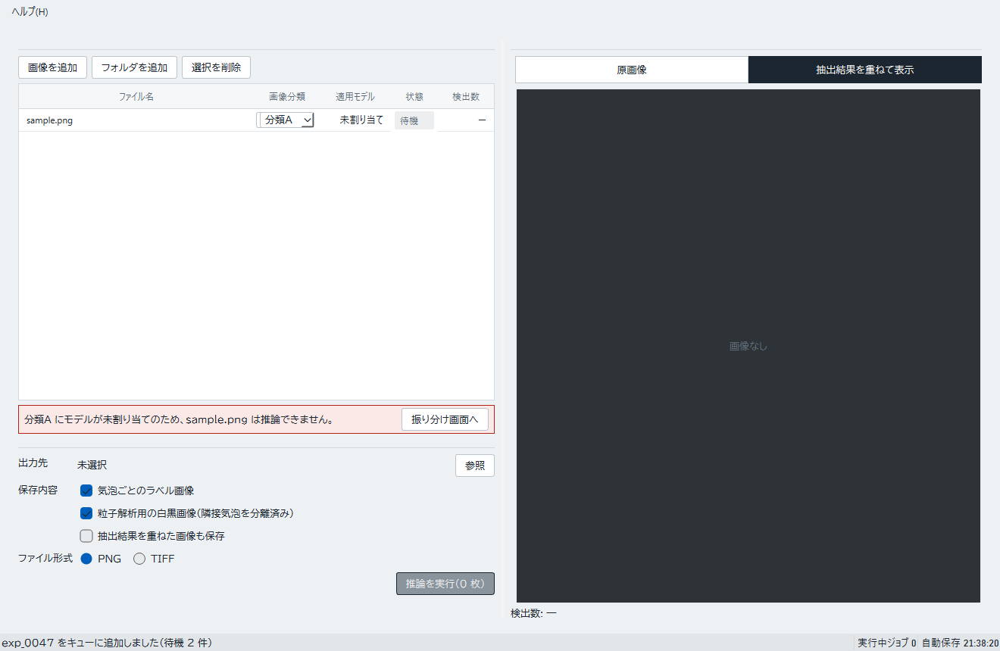
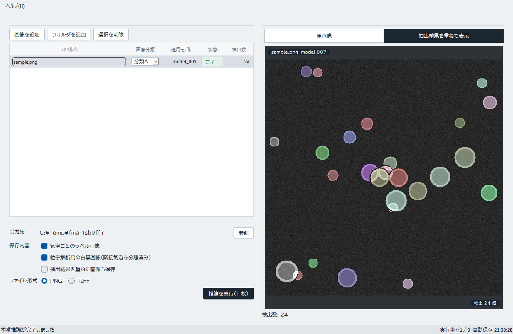

現在は模擬表示です。実モデルによる推論と結果ファイルの保存は未対応です。実行後に表示される画像や抽出結果は模擬データです。出力先を選んでもファイルは作られません。
画像を追加する
- 「画像を追加」または「フォルダを追加」を選びます。
- 表の画像ごとに分類を選びます。
- 割り当てモデル欄が、選んだ分類に対応するモデルへ変わったことを確認します。
- 「出力先」の「参照」を押し、保存先フォルダを選びます。出力先は必須です。現在は模擬表示のため、選んでもファイルは作られません。
未割り当てを確認する
分類に対応するモデルがない場合、表には「未割り当て」と表示され、画面上部に注意が出ます。未割り当ての行が1件でもあると、「推論を実行（N 枚）」ボタン全体が無効になり、処理を始められません。「振り分け画面へ」を選び、リリース済みモデル・振り分け画面で分類にモデルを割り当ててください。


模擬結果を確認する
全画像にモデルが割り当てられ、出力先を選んだら「推論を実行（N 枚）」を押します。処理後に一覧の状態と結果プレビューを確認できます。画像表示の切り替えでは元画像と模擬抽出結果を切り替えます。


この画面の結果を実運用の解析結果として使わないでください。実モデルへの接続とファイル保存が利用可能になるまでは、本番データ処理には使えません。